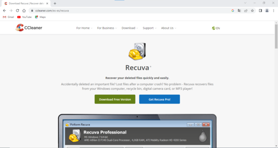
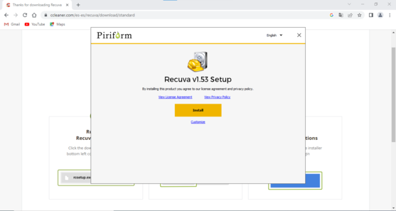
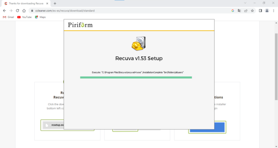
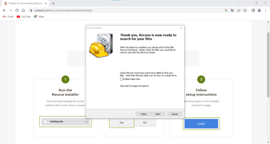
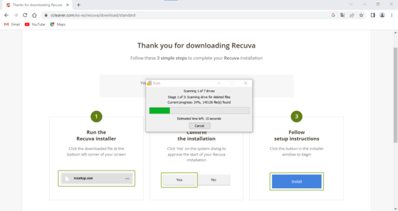
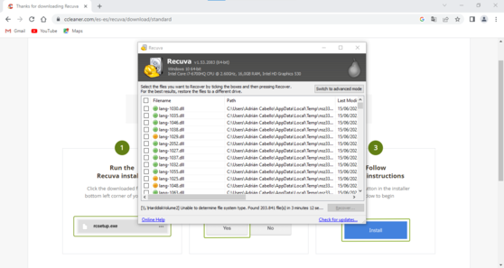

Recuva
1Primer paso
Instalar recuva de la pagina oficial.
2Segundo paso
Ejecutar el instalador y marcar la opcion install durante la instalacion.
3Tercer paso
Recuva se está instalando.
4Cuarto paso
Recuva está instalado.
5Quinto paso
Recuva hara un analisis inicial de todos los archivos del equipo.
6Sexto paso
Interfaz grafica de recuva.
